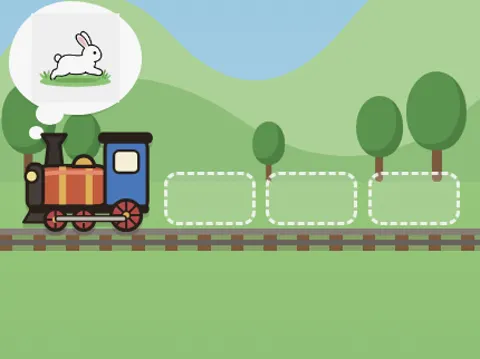
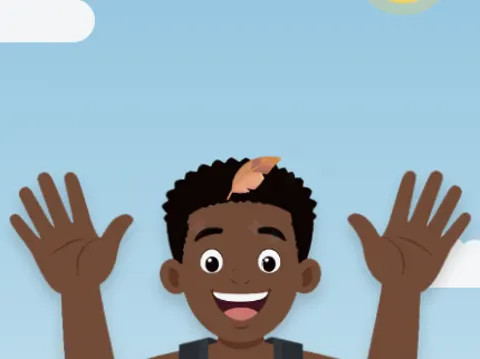
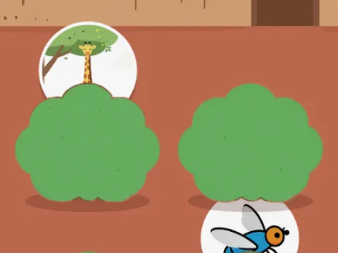
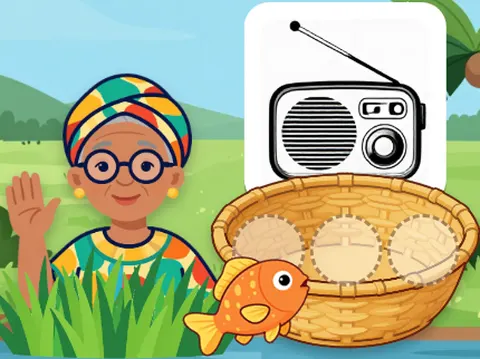

Yorùbá · Phonics
Build the word from its syllables
The reading game. Hear a word, then build it from written syllables, sorted by tone, and see the shape of each tone.
Play PhonicsFree · experimental · a trial run
Learn Yorùbá through play.
Listening games for young learners, with every word spoken by Yorùbá speakers. This is our first step towards a bigger, open-source app in many Nigerian languages, and what you tell us will shape it.
No sign-up. Nothing to install. Free.


Start here
Our games strung into a course. Each unit is a scene from a child's day: my day, my body, mealtime, washing, family and friends, home, play, animals, the kitchen. A row of stepping stones is one short sitting, a few new words at a time, with earlier words coming back.
Or pick a game
Hear a word and choose, catch it, act it out, drum its syllables, or just explore with no wrong answer. Every game on the path can also be played on its own.









Practice room
The path is listening-first and needs no reading. The practice room is for learners who can read Yorùbá and want to work on spelling and tone.
The reading game. Hear a word, then build it from written syllables, sorted by tone, and see the shape of each tone.
Play PhonicsTone practice. Hear a word, then pick high, mid or low for each syllable. The buttons play pitches measured from our speakers' recordings.
Play TonesThe picture-and-word reading game. Read a few Yorùbá words, pick the one that matches the picture, and hear it once you're right.
Play VocabularyThis is a trial run
These games are the experimental version. We're going to build a more comprehensive, varied, open-source app for all platforms, across many Nigerian languages, and this suite is the first step towards it.
What players tell us is crucial to the final product: what your child loved, what confused them, a word that sounds wrong, a picture that doesn't fit, a game that didn't work on your device.
Opens an email to hello@speaknigeria.org.

Volunteers wanted
Volunteers will take these experimental games into more languages, Igbo and Hausa first, and from there into the full app. You don't need to be a teacher or a programmer. Here's who we need:
Many voices in every language: record words and short sentences on your phone, so learners hear many speakers, not just one.
Record your voicePut the words and phrases the games use into your language, so a new language can start from what already works.
Help translateFluent speakers who check our spellings, tones, recordings and pictures, so what children learn is right.
Check our workBuild new games and improve the ones here: code, design, art, testing. The app we build next will be open source.
Build with usMore voices, more words and sentences, and careful checking of every recording and picture we already have.
Volunteer for YorùbáIgbo speakers who record, translate and check now will shape how these games sound in Igbo, from its tones to its everyday words.
Volunteer for IgboHausa speakers who record, translate and check now will shape how these games sound in Hausa, from its tones to its everyday words.
Volunteer for HausaEdo, Efik, Ijaw, Tiv, Urhobo, Ibibio, Nupe, Kanuri or any other: please get in touch. A single dedicated volunteer can kickstart an entire language.
Tell us your language